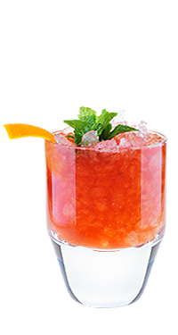

Московский сангари — Сложно устоять!
Встречая гостей, прибывающих на бал Воланда, Маргарите было позволено опереться на колонну рукой и поставить ногу на бархатную подушку…
Легенда коктейля
Встречая гостей, прибывающих на бал Воланда, Маргарите было позволено опереться на колонну рукой и поставить ногу на бархатную подушку.
Но в черновиках Булгакова остались пометки о том, что за колонной стоял бокал с коктейлем, и имеено он помог Королеве продержаться всю ночь.
- Как приготовить:
-
- Наполни рокс дробленным льдом доверху
- Положи в шейкер чернослив 2 штуки и гвоздику 3 штучки
- Подави мадлером
- Налей: медовый сироп 15 мл, черносмородиновый ликер 20 мл, и водку 40 мл
- Выжми цедру дольки апельсина и половину лимона
- Наполни шейкер кубиками льда и взбей
- Перелей через стрейнер в рокс
- Долей крепленое вино красное доверху
- Досыпь немного дробленого льда
- Укрась цедрой апельсина и веточкой мяты